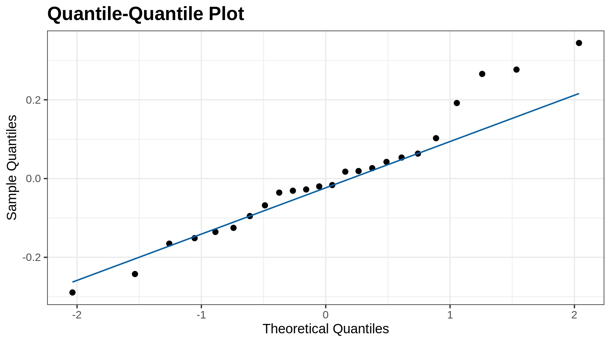
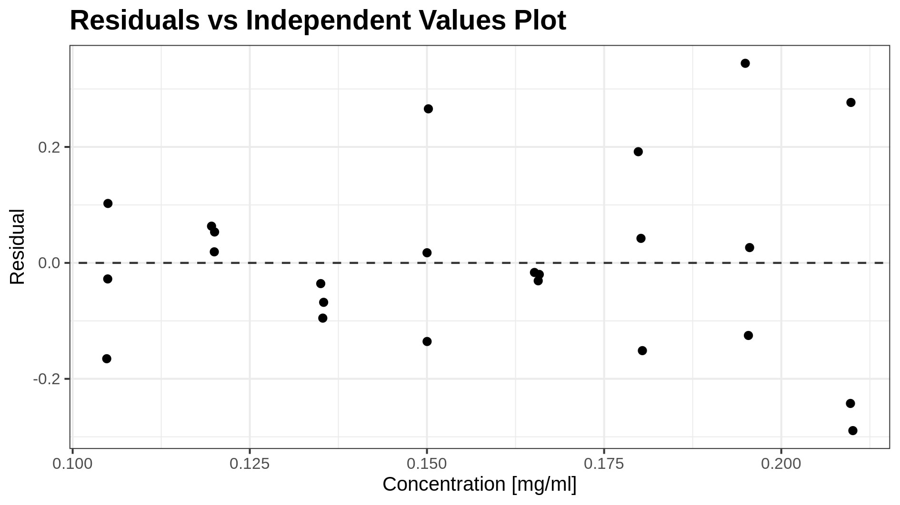
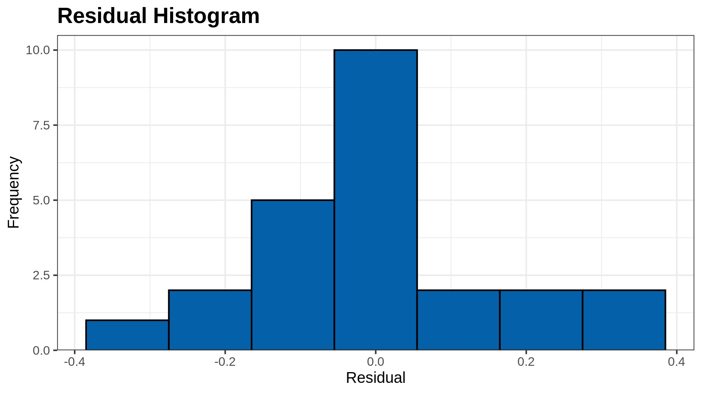
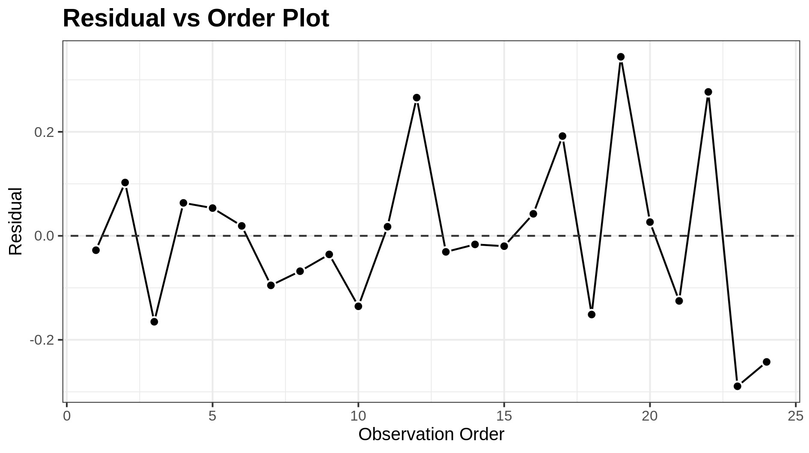

All results in the final report are unrounded (truncated) and are reported with more decimal places than the corresponding acceptance criterion. This facilitates proper result evaluation and statistical analysis (e.g. by external reviewers), while still allowing the result to be rounded to the same number of decimal places as the acceptance criterion without the risk of double rounding
| Abbreviation | Description |
|---|---|
| Coef | Coefficients of the linear regression model |
| SE Coef | Standard error of the coefficients |
| 95% CI | 95% confidence interval for the coefficients |
| t-statistic | Coefficient divided by its standard error |
| p-value | p-value is a statistical number to conclude if there is a relationship between analyte response and analyte concentration. A low p-value (< 0.05) means that the coefficient is likely not to equal zero and we can conclude that analyte concentration has an impact on analyte response. |
| s | Estimated standard deviation of the errors or residual standard deviation, synonymous with RSD |
| R | Correlation coefficient; R quantifies the strength of the linear relationship between analyte response and analyte concentration. |
| R-sq | R-squared or coefficient of determination; R-sq is the proportion of the variation in the analyte response that can be explained by analyte concentration. |
| F-value | F-value is the result of the F-test. The F-test compares the intercept only model and decides whether the added coefficients for analyte concentration improved the model. |
| AIC | Akaike information criterion; AIC estimates the quality of models relative to other models fitted on the same data. |
| BIC | Bayesian information criterion; BIC estimates the same as AIC, but BIC's calculation is slightly different. As for AIC, models with lower BIC are generally preferred. |



